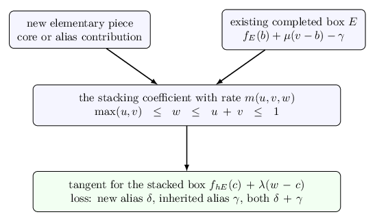

A guide to the manuscript
The frozen PDF is a 374-page reference account. Its results have been divided into papers organized by subject. The 21 current papers total 403 pages and range from 11 to 29 pages each, including references. Their shared foundations cover finite spectral evaluation, coefficient estimates, source asymptotics, oscillatory sums and marked geometry. The application papers give their precise diagram and twist hypotheses and name the numbered statements they use.
The local spectral bounds and the central shared-coefficient asymptotic now occupy one 25-page paper, Spectral bounds and asymptotics of Casimir sources. It begins with the finite Casimir polynomial and its two parity formulas. The first part proves upper bounds over the full real spectral interval; the second proves a nonzero central asymptotic and a gap away from the central region, assuming the stated stationary radii. The latter result does not bound the noncentral terms of the original invariant. Later papers cite these two conclusions separately.
The Newton calculus and stationary-profile arguments now share one 26-page paper. It replaces two drafts totaling 32 pages by proving their common support, lattice and maximization results once. The finite tangle identities and the stronger completed-root leaf bound are retained, and both earlier editions remain available for their existing citations.
The two circle-tree asymptotic papers now share a 27-page account, Volume asymptotics for trees of crossing circles. Their finite kernel, edge phase and Fourier trace are developed once. The summed and directed conditions retain separate proofs and conclusions; only the summed theorem gives the explicit first meridian correction. The earlier 15-page editions remain available for existing citations.
The current Conway papers cover every fixed strict expression, rather than only the reference manuscript’s completed-root grammar. The proof uses its own strict variational problem, bounds for the entire source, pure-source asymptotic and marked filling geometry. The separate signed recurrence paper near the quarter index is a reusable local result; it is not a premise of this pure-source volume proof.
The geometric account now includes its local pyramid and prism constructions, complete face maps and primitive collar calculations in 21 pages. The two earlier completed-root geometry editions remain available for citations, but are no longer prerequisites of that account. The directed circle-tree paper likewise makes the older local criterion a consequence of one more general argument.
The moving-source estimates and all-orders recurrence implication now have separate 20- and 13-page accounts. They use the exact moving finite calculus, then prove the analytic estimates needed on the original shared source. The nonparabolic representation and preferred-longitude proofs have separate 22- and 29-page papers and enter only when the analytic germ is identified geometrically. The operator implication retains the hypothesis of a genuine fixed all-level annihilator. The reference PDF remains frozen. It contains 15 chapters and 18 appendices: 93 pages of main text, 266 pages of appendices, 13 pages of front matter and two pages of references. Thus more than seventy percent of the file is appendices. The five longest alone occupy 126 pages: the geometric longitude argument (37), terminal decoration (27), the octahedral and filling geometry (22), the central contribution for matched spheres (22), and the analytic and contour estimates (18).
This is how the document became a reference book. Several separate arguments accumulated behind chapters that summarized their conclusions. The appendices repeated definitions and setup so that each could be read on its own. They also retained different constructions with different hypotheses. This page count is not the length of a single proof of the volume conjecture.
The current division improves the reading order; it has not compressed the whole project. Its 403 pages include expanded proofs and broader current results, as well as each paper’s introduction, notation and references. The Newton, circle-tree and Casimir mergers have removed ten pages of overlap in total. The 21 drafts are provisional subject groupings, not a decision to publish 21 papers. Further consolidation should follow the mathematical dependencies: state a shared foundation once, cite its precise conclusion, and keep distinct hypotheses visible. The errata record corrections to the frozen account.
The dependency graph records the strict construction’s normal form, boundary profiles, spectral estimates and marked geometry separately. It also distinguishes the independent local results from the premises of the final volume theorem. The narrower completed-root theorem is not used to justify the broader construction.
Read the manuscript PDF. The editable sources and build instructions are available alongside it.
The paper contains completed proofs of volume equalities for decorated planar diagrams, unchanged diagrams satisfying weak balance, and ordered-tree constructions, together with several completed theorems whose conclusions are narrower. It derives the finite quantum expression, constructs the labeled hyperbolic geometry, bounds competing terms and performs the specified auxiliary fillings. The families have different hypotheses, so the sections below introduce their constructions separately.
Readers new to the source, meridian or tangle notation can begin with the first-reading chapter. The results chapter gives the complete family-by-family scope. The illustrated guide also retains alternative approaches and their obstructions; the manuscript presents the proved arguments and marks partial conclusions explicitly.
The planar decoration chapter
The planar construction begins with a simple triangulation of the sphere and a chosen pairing of its adjacent triangles. These finite data give a planar crossing-circle diagram in the three-sphere. The chapter constructs its circle packing and then inserts even terminal stacks on both sides of each crossing circle. The number of insertions is chosen by an explicit curvature recurrence.
After that finite decoration, independently sufficiently long signed twists at every old and new region give the full volume equality. A specified parity pattern makes the main strands one knot. The inserted tangles preserve this pairing and generally change the knot type. The theorem does not require a tree of tangle operations or compare the relative magnitudes of the long twists.
The new terminal-decoration paper gives this construction in 13 pages. It proves the endpoint parity, packing extension, exact recurrence and strict inequalities for every old and added region. Its complete shared weights provide the certificate required by the planar companion. The finite evaluation, nonzero central filling contribution and primitive volume comparison are imported by numbered theorem. The powers and the decorated diagram are fixed before the quantum level grows.
The reference chapter explains the local construction and the inequality it establishes. Its appendix gives the full proof: the variational packing, the exact coefficient with its original mark and parity, the local geometric contribution, all Fourier tails and boundary terms, and completion to the actual smooth knot complement. The results page gives a detailed introduction with the same figure.
The packing criterion for an unchanged diagram
Appendix P proves the full volume limit under weak balance in the complete circle packing. Its diagram is the original matched sphere; no terminal pieces are added. The appendix defines the triangle potential before stating the condition and derives its Hessian explicitly. It then changes all ordinary coefficient radii from to , leaving the protected zeros fixed. Triangle entropy gives a positive linear loss for every noncentral term, while stationarity bounds the full increase in action by a quadratic function of .
A sufficiently small fixed gives a strict bound for the entire remaining polynomial. Appendix N transfers it through the original filling functional, and Appendix O supplies the nonzero geometric contribution and its actual knot-complement volume. Thus Appendix P contains a full-invariant theorem under its explicit packing condition. Without that condition or another proved remainder estimate, Appendix O continues to have its narrower conclusion. The worked explanation states the constants and shows why the linear gain dominates.
Composing certified matched spheres
Appendix Q proves that a full source certificate survives a specified triangular sum. It describes the actual gluing, explains why the ordinary joining face has one target, and treats all three local sector choices. It requires certificates for every locally allowed noncentral string, even when an input’s final coefficient vanishes for another reason.
The theorem permits any fixed finite number of certified pieces. A worked sequence starts with the seventeen-region rational certificate and repeatedly adds a tetrahedral sphere. The proof locates an original balance failure away from the attachment, so these marked diagrams remain outside weak balance while retaining a full source estimate. The volume conclusion uses the new diagram’s own knot-component test and sufficiently long fixed signed fillings. The illustrated explanation defines the variables and follows the cancellation at the joining face.
Moving the meridian and obtaining every expansion order
A meridian goes once around the main knot strand. Its eigenvalue is ; completeness corresponds to in the chosen lift. The microscopic parameter is , defined by and . Keeping in a fixed parameter set therefore makes approach one as the level grows.
Moving-meridian source estimates for strict Conway tangles proves estimates for the whole source in this regime. A product junction without a crossing circle is called a bare junction. Such junctions can be adjacent, so their shared indices must be estimated together. The paper compares a deformed high-index trace with a reflected complete trace, then reassembles the adjacent junctions using the exact finite pairing. Its pressure, the maximum of the positive action over the entire connected group, includes the action already supplied by every attached branch. This avoids replacing shared indices by independently chosen maxima.
Theorem 1.1 bounds all discarded terms before changing the filling contours, and gives a nonzero holomorphic Gaussian expansion of the retained finite wire sum. Theorem 1.2 evaluates every original filling trace for sufficiently long fixed signed powers, with no restriction on their ratios. It retains all Fourier charges, endpoint terms and repeated-root derivatives. This is the source input for the strict case of the next theorem; the summed and directed circle-tree cases have their own source inputs.
Meridian expansions and classical symbols of quantum recurrences, Theorem 1.1, proves every prescribed expansion order for each of those three source classes. Write for the original reduced meridian function and . The source theorems make nonzero for all sufficiently large levels. The exact reduced/full conversion is For every fixed positive integer , the normalized expansion is The logarithm is the branch tending to zero. Each is even and vanishes at zero. The estimate holds uniformly on each disk , and on fixed compact sets in the upper half-plane and their required integer translates. The proof treats both level parities; lower coefficients may depend on parity, while their highest-degree action coefficients agree.
The directed case needs an additional argument. Each subtree is divided by its exact value at zero before it is passed to its parent. The all-orders induction keeps this normalization and restores those constants at the root. The established conditional error margins remain in force outside the local saddle. The proof therefore does not replace the directed criterion by the summed condition, and it retains the allowed high-degree vertices with zero crossing power.
The highest-degree coefficients above determine the stationary action germ. A later geometric identification turns its derivative into the preferred longitude and identifies the first correction with the cusp shape. The expansion itself uses no longitude theorem. It is microscopic, not a large-level estimate at a fixed , and it makes no moving-meridian claim for the decorated planar class.
Completed results with narrower conclusions
Appendix N proves a finite norm bound for inserting signed twists. Let be the polynomial obtained after the common face coefficient has been taken, and let be the fixed crossing powers. The polynomial must have degree at most in each spectral variable; the exact source construction establishes this hypothesis. The bound is Here is the original reduced ribbon contraction after inserting those powers; the prescribed framing correction has unit modulus. The bound’s constant is independent of the level. It retains values and derivatives at the repeated spectral roots and gives stronger bounds when the polynomial vanishes at the nodes. A strict estimate for the shared norm remains a separate hypothesis; the finite bound alone is not a volume-limit theorem for a new diagram.
Appendix O treats the unchanged diagrams determined by simple matched spheres. It proves a nonzero long-filling asymptotic for the central recurrence-path contribution, called central in the finite formula. The leading rate is the volume of the original filled complement, with the correct primitive peripheral curves. This contribution is one specified part of the invariant. The appendix does not bound the complementary pieces for every such diagram and therefore makes no general full-invariant claim for the unchanged cores.
These two results can be proved without resolving the general remainder problem. To use them in a full volume proof, one must additionally bound the complementary polynomial and compare its rate with that of the nonzero geometric contribution. For the decorated planar family, the prescribed insertions supply the strict comparison. For the tree families, the recursive estimates supply it under their own hypotheses. The open comparison for an arbitrary unchanged diagram is therefore not an assumed step in those more restricted theorems.
The ordered tangle construction
Start with two strands in a box whose four endpoints are labeled and kept in order. Insert an integer number of signed half-twists. A positive and a negative count give opposite crossing directions. Turn the box through a quarter-turn; this is the basic piece used in the construction.
Two boxes can be stacked in order, and a constructed box can itself be turned. After finitely many such operations, join the remaining outside endpoints by the prescribed cylindrical closure. Following the strands determines whether this produces a knot or a link. The theorem requires one component, with no closed component hidden inside a box.
The notation in the paper abbreviates these operations:
| Notation | Meaning |
|---|---|
| Two strands with signed half-twists. | |
| The quarter-turn of the tangle box , with its endpoint order retained. | |
| The th basic twist piece. Different subscripts carry independent integers. | |
| The ordered stack of and . | |
| The prescribed closure of the four outside endpoints of that stack. |
These are operations on actual tangles. The notation does not mean that formal arithmetic with rational fractions has replaced an isotopy argument.
For the paper’s main family, first stack two basic pieces. Thereafter one may turn a constructed box, stack two constructed boxes, or attach one additional basic piece on either side. The technical notes call a box obtained by these rules completed. This is a recursive name for a class of boxes; it does not mean that a Dehn filling has already been performed. Construct two such boxes and , then close . The paper also handles its stated isolated stacks of at least three basic pieces.
The theorem and its quantifiers
For each fixed permitted construction there is a threshold. Choose the twist integers independently, with either sign, beyond that threshold in absolute value, and choose their parities so that the endpoint pairing gives a knot. Fix all those integers. The theorem then proves
Here is the resulting knot, is the reduced Kashaev invariant at integer level , and the right side is its hyperbolic complement volume. The limit includes even and odd levels and composite levels. The twist counts do not grow with , and no restriction is imposed on their relative sizes. The threshold may depend on the entire construction.
To analyze the geometry, the proof first places an auxiliary crossing circle around each twist region. The resulting augmented link has a convenient decomposition into ideal hyperbolic cells. Filling an auxiliary circle means attaching a solid torus whose meridian is the prescribed primitive slope on that boundary torus; this inserts the recorded twists. In the knot theorem all auxiliary circles are filled. The cusp of the knot itself remains unfilled. Thus the conclusion is about the knot complement, not a closed three-manifold.
Two companion results extend the paper’s recursive family. The strict-tree theorem proves the estimates for every expression passing a finite angle-feasibility test. The net-twist theorem then reduces an arbitrary ordered cylindrical product closure to one of those expressions or to an elementary two-strand braid closure. In the former case, the size condition applies to the combined twist numbers produced by the reduction. The results chapter states that condition and gives an example. The earlier PDF chapters retain their own theorem and proof; the new quantitative chapter is described next.
A bound independent of the tree size
The chapter on directed subtree estimates gives one sufficient twist threshold for every finite ordered circle tree with at least one edge: at every vertex, with either sign. The actual strand pairing must give one knot without an internal closed component. A more flexible consequence lets each vertex independently have this twist magnitude or degree . The degree alternative permits any fixed signed power. The whole tree and all powers are fixed before the quantum level grows.
The directed criterion is proved from the exact polynomial obtained by evaluating a subtree while retaining its attaching variable. The proof establishes its nonzero value at zero, normalized bounds on real and complex angles, and a nonzero first Fourier contribution to the next trace. Each error is compared with the filling at the current vertex. Different subtrees can have different decay bounds. At the final vertex there is no outgoing variable, so the proof does not impose an unnecessary outgoing bound.
The chapter and its full technical appendix retain the actual finite trace, its boundary contributions and its orientation factors. The geometric path identifies the resulting action with the volume of the original knot complement. The earlier local-message chapter proves an included, more restrictive criterion, and the summed theorem below remains useful for individual diagrams.
One consequence attaches an even stack of sufficiently many long odd terminal pieces at each vertex of any fixed core whose endpoint pairing is a knot. The insertion preserves the pairing but generally changes the knot type. It supplies covered knots with arbitrary prescribed powers at the core vertices; it does not prove the theorem for the unchanged core.
The quantitative circle-tree chapter
A further chapter treats a different explicit description of the tangle construction: every vertex of an ordered tree carries an integer braid, and each child tangle is turned before it is stacked on the prescribed side of its parent braid. A terminal root gives the cylindrical closure. The strand pairing must give one knot.
For vertex degree and crossing power , the condition
gives the volume limit. It also gives a uniform profile as the meridian moves by order , with its first correction expressed by the preferred cusp shape. The full statement defines every framing factor and gives numerical sufficient bounds. Some short powers are allowed at sufficiently high-degree vertices; the earlier long-twist chapters retain their own construction class.
The classical part now has its own 15-page paper, Positive octahedra and primitive fillings for trees of crossing circles. It proves the literal ordered cut, full peripheral maps and primitive completion whenever at every vertex. This condition allows zero powers at high degree. It also identifies the absolute critical action with the completed metric volume. The paper uses only the geometric foundation’s local peripheral-volume differential; it does not impose that foundation’s separate long-twist hypothesis or claim a nonzero quantum asymptotic. The combined circle-tree volume paper proves the full finite-sum asymptotic under either of its two stated analytic criteria. The summed proof estimates the joint Fourier sum; the directed proof evaluates subtrees with their exact normalization. They share the finite algebra but use different global estimates.
The reference chapter illustrates an actual octahedral attachment and explains why it recovers the original exterior. Positive tetrahedra continue along the filling path until the primitive cone angle is . This constructs the smooth knot complement whose volume appears in the quantum limit. Appendices E and F contain the full finite-sum, ordered-cut and geometric-completion proofs, including their face maps, peripheral words and uniform constants. The companion notes present the same calculations separately.
The geometric longitude and the quantum recurrence
Two companion papers give the geometric part of this argument. Nonparabolic holonomy of trees of crossing circles constructs representations of the original augmented-link group while the main meridian varies. It proves full ordered conjugacy relations, follows the chosen eigenlines through half twists, and identifies a one-dimensional geometric germ after the auxiliary slopes are fixed. The proof uses a positive ideal triangulation and its actual primitive peripheral coordinates; equality of traces or slope eigenvalues alone would leave necessary group relations unproved.
Preferred longitudes of Conway tree complements then determines the preferred longitude on that germ. Dividing it by the explicit edge factors leaves a rational function of the meridian alone. Regular reconstruction at every nonzero meridian value rules out additional zeros and poles, so the discrepancy is a monomial. An explicit cusp path determines the exponent, and a Seifert-surface frame argument fixes the sign. The proof therefore does more than match the value and first derivative at the complete point. Neither paper assumes a quantum asymptotic or asserts a full A-polynomial identity.
The strict-tree extension allows product junctions without crossing circles, of arbitrary valence and adjacency. Insert a circle around a literal identity box at each such junction, then fill its meridian. This restores the original framed collar and its ordered based puncture loops. Eliminating the added angular variable gives the original product action, including at a possible half-edge fold. The argument therefore identifies the full marked representation germ of the original long-filled knot.
The analytic implication is now Theorem 1.2 of the meridian-expansion paper. Its hypothesis is a specified fixed, nonzero operator where the coefficients are rational functions and replaces by . The same operator must annihilate the whole function at every sufficiently large integer level. An equation only for , a fitted finite collection of levels, or a finite meridian jet does not meet that hypothesis.
The exact equation requires the source at . The translated estimates supply all these values. After the exact reduced/full gauge is included, comparison at every inverse-level order gives a formal identity. The coefficient at degree recovers the coefficient of before the substitution , where and . This is why all orders are needed. After clearing denominators and removing the common power of , the first nonzero classical symbol consequently vanishes on the selected analytic germ.
The optional Lean package connects an original root-of-unity recurrence to the formal characteristic calculation. The Laurent-coefficient theorem proves every coefficient expansion from its finite Laurent sum, including negative powers. The literal sine gauge, shifted denominator exclusions, meridian-factor expansion and finite equation assembly are also proved. The actual recurrence, exact source normalization, eventual nonvanishing and all-orders shifted source-ratio expansion remain inputs.
The normalization theorem constructs the quotient by the maximal common power of in a finite polynomial coefficient record. It proves that the quotient has a nonzero classical symbol and preserves the recurrence at the physical roots. The coefficient adapter connects this record to the finite Laurent theorem and reconstructs its entire classical symbol. The actual rational denominator chart and the passage to the selected holomorphic and geometric germ remain application steps. No annihilator is constructed here. The coverage record states these boundaries for every current paper.
Corollary 8.1 makes the separate geometric identification. It checks the original group, eigenflag and primitive logarithmic filling equations before applying Nonparabolic Geometry Theorem 1.2 and Corollary 7.1 and Preferred Longitudes Theorems 1.2–1.3. In the strict class, the fixed power threshold is the larger of the analytic and classical thresholds. The conclusion is that the selected geometric irreducible factor divides the first nonzero classical symbol, with the preferred exponent and negative determinant-one sign retained.
These statements cover the strict long-filling sources and circle trees under the summed condition or any directed certificate, including its local corollary. They do not construct an annihilator, identify the entire A-polynomial or factor multiplicities, or prove the full AJ conjecture or equality of recurrence ideals. The frozen reference locates the earlier arguments in Appendices H and M (expansions), I (circle-tree geometry and longitude), and J (bare-junction extension).
How to read the proof
The first part fixes the invariant normalization and derives the finite algebra of the tangle operations. A color is an integer representation label in that finite calculation; a circle is a topological component carrying such a label. Summing colors changes the evaluation and filling changes the diagram, so the two operations must be distinguished. The source formula retains values and first derivatives at repeated spectral points, which explains the use of Hermite interpolation. Newton polynomials make the allowed integer indices at a product explicit. These support conditions are kept before taking a continuum limit.
The 18-page Newton tangle paper now proves the complete-meridian product, physical turn, closure and colored-circle formulas with their repeated-root derivatives. For its specified finite compositions, it also proves the positive complete auxiliary-color source’s variational limit and strict interior maximum. It imports the finite paper’s operator and reduced-invariant normalization. Signed fillings require additional bounds and noncancellation.
The moving-meridian paper proves the finite formulas needed when the main meridian parameter changes. Its first calculation is a physical partial trace, so the normalization is fixed before introducing a polynomial functional. It then derives each oriented turn from the evaluation and coevaluation maps of the strand representations. The argument keeps the entire polynomial algebra at collisions of spectral roots; values alone would discard the derivative terms. Finally it contracts an ordered tree, keeping every index, the edge factors and the single closing scalar. Reordering that finite contraction does not change the physical turn assigned to an edge. Estimating its growth is a subsequent analytic problem.
The geometric part associates normalized state variables with angles of ideal pyramids and prisms. An ideal vertex lies at infinity in hyperbolic space. Strict angle inequalities produce genuine cells, and the ordered endpoint data determine their face identifications. A strictly concave angle functional has a unique geometric maximum. The proof then follows actual paths on the cusps to identify the meridian and longitude used for filling.
The complete Conway geometry paper gives this construction for the completed-root grammar. Matching edge angles is only one part of the argument: the stationary equations match the ordered quadrilateral faces, including their shear. The paper proves convexity after each attachment, recovers the actual projection cut from the boundary’s cyclic orders, and checks the full face-pairing maps. Compatible horospheres then prove cusp completeness. Summing the cell volumes gives the absolute volume of the augmented complement. A separate cusp calculation follows the original meridian and disk longitude and uses the area of their parallelogram to prove that they form a primitive basis. Four illustrations show the tangle operations, the two cells and this cusp lattice. The resulting positive-source volume identity is distinct from the signed invariant after filling the crossing circles.
The 12-page Conway filling paper continues this geometry. It defines its potential from the cells, keeps the actual face maps and original peripheral curves, and solves the primitive equations for independently long signed slopes. Its metric completion checks that the new meridian winds exactly once. The volume constant is fixed at the complete metric and carried to the same filled fundamental chain. A quantum expansion is not needed for this classical construction. Comparing the resulting action with the action of a finite source is a separate analytic step.
The source estimates address a different issue: a signed sum can be much smaller than the sum of the absolute values of its terms. In the recursive tree proof, the exact reflection formula separates a principal contribution from extra terms called aliases. In the planar face-source proof, the three pieces instead refer to paths through or on either side of a central recurrence cut. These are different exact decompositions, with their own bounds. In each full-invariant theorem the complementary estimate preserves the finite supports. The recursive proof uses concavity and supporting tangents to reduce two important estimates to finite rational certificates. Appendix O deliberately evaluates only the central planar contribution, as described above.
The 28-page source-bound paper now proves the whole-source bound for every fixed strict expression. Theorem 1.1 treats three or more leaves; Corollary 9.1 proves the separate two-leaf case. Its exact Fourier identities retain the first derivatives at repeated spectral roots and all endpoint terms. Positive comparison sums keep shared indices. Two supporting-plane inequalities and the absolute boundary profiles then propagate the estimates through the expression. The older signed local recurrence bounds remain useful exports, but are not premises of this global argument.
The Conway asymptotics paper constructs a holomorphic interpolation of the pure source’s actual factorials and sums over its original integer lattice. This gives a nonzero local expansion, including when a leaf index is one quarter. The exact full crossing powers are expanded in ordinary colored circles before filling. A second finite Fourier sum supplies the real-action expansion and global bound required by the oscillatory filling theorem. The physical source error is controlled separately. The resulting asymptotic holds for the entire original invariant through both level parities, for independently long fixed signed twists on any fixed strict expression whose actual closure is a knot. A classical shear calculation identifies its action, including the additive constant and primitive integer slope, with the volume of that knot complement.

Near the geometric maximum, a complex asymptotic formula gives an exponential action, a nonzero leading coefficient and a controlled error. The paper calls this a local packet. The estimates outside that neighborhood show why the packet really determines the invariant; locating a critical point by itself would not rule out a missing or canceled contribution.
Finally, the filling transform is evaluated with all its Fourier modes and boundary terms. The marked meridian-longitude convention identifies the real part of its critical action with the volume after filling. This last normalization is what connects the finite invariant to the actual knot constructed at the beginning.
The technical appendices supply the main finite algebra, analytic interpolation estimates, certificate details and marked geometric calibration used in this chain. Named earlier finite-source and geometric lemmas remain explicit proof dependencies; the PDF does not reproduce every calculation in the technical library. The proof-input map locates these written inputs separately from the executable checks.
Appendix R extends the joining argument to a triangle with three positive boundary curvatures. It proves the conditional disk minimum, accounts for the original coefficient demands, and separates a wholly central inserted piece from one containing any noncentral term. Explicit even chains make the two required boundary ratios small. The worked explanation gives the notation, two diagrams, the finite certificate and the precise volume conclusion. The new scalar comparisons are formalized in Lean; the disk geometry and the analytic inputs remain written proofs.
Reproduce the finite certificates
The companion papers have a combined finite-check command:
python3 repro/check_paper_algebra.py --output repro/results/paper-algebraIt runs 23 finite groups registered in the paper-check runner. They check physical Newton identities over exact finite fields, terminal curvature and endpoint identities, and circle-tree seam, peripheral and rational-bound formulas. The additional moving-meridian checks use physical matrices at both ordinary and colliding spectral parameters; the complete geometry checks verify rational face-map identities and the endpoint pairing tables. Other groups reproduce the complementary-color certificates and the classical filling’s symbolic periods, Hessian and volume boundary term. The two new groups check whole moving Fourier traces, reflected pairings, the exact reduced/full gauge and formal coefficient recovery. The output records their bounded scope and source hashes. These checks do not replace the proofs for every level, the all-length insertion argument, or the construction and completion of a hyperbolic metric. In particular, they do not prove recurrence existence or replace the uniform all-orders remainder argument. The paper source guide lists the software requirements and individual commands.
The quantitative chapter uses python3 repro/run_research_checks.py curvature-fillings. The checks chapter describes its three programs and their finite scope.
From the repository root, run:
python3 repro/verify.py --list
python3 repro/verify.py --plan
python3 repro/verify.py --output repro/resultsThe first two commands describe the checks. The third runs them serially, writes fresh results and compares them with the committed reference records. The reproduction guide explains the software requirements and outputs; the proof-input map locates the written arguments behind each certificate.
These checks use rational bounds with explicit remainders, not a numerical search for maxima. They verify finite arithmetic used in the proof. They do not mechanically verify the topology, the invariant normalization, or every analytic step of the manuscript.
To build the paper and guide, use the commands in the manuscript source guide. The mathematical illustrations are supplied as editable TikZ sources as well as rendered assets. For the attachment diagram above, download the vector PDF or the TikZ source.